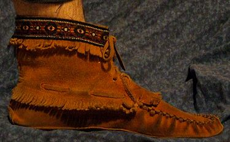

A cipő a lábbelik egyik fajtája. Alapvető feladata az emberi láb védelme a külvilág hatásaival szemben.
A cipőknek meglehetősen sok változata alakult ki a rendeltetésük és a viselő társadalmi szerepének
függvényében. Talpuk lehet sima, alacsony vagy magas sarkú – az utóbbit a nyugati társadalmak a nőies
öltözködés egyik jelképének tartják –, készülhetnek bőrből vagy textíliából is, valamint pl. az
edzőcipők lehetnek műanyagból.

Mokaszin
A mokaszin az amerikai őslakosok szarvas-, esetleg más puha bőrből készült
lábbelije.